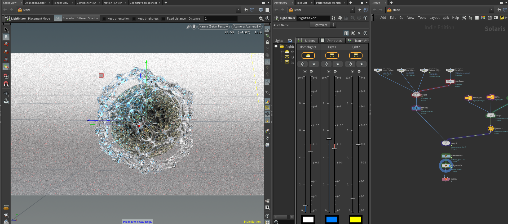
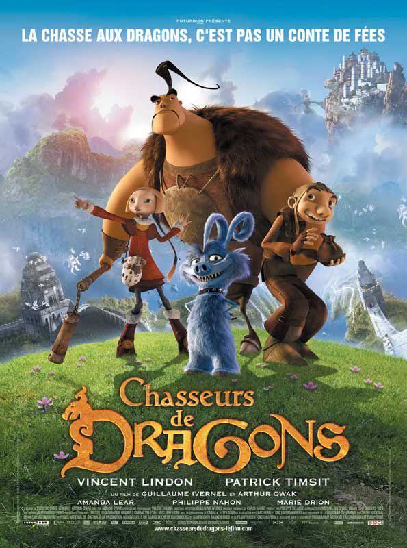
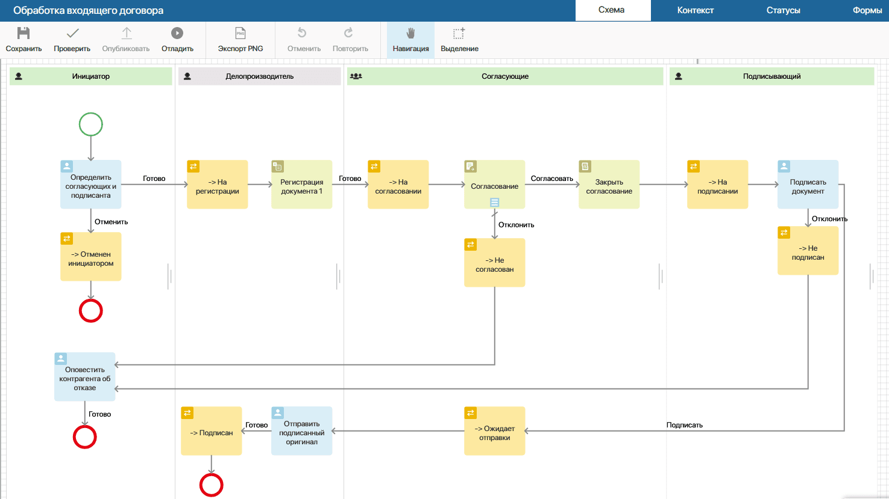
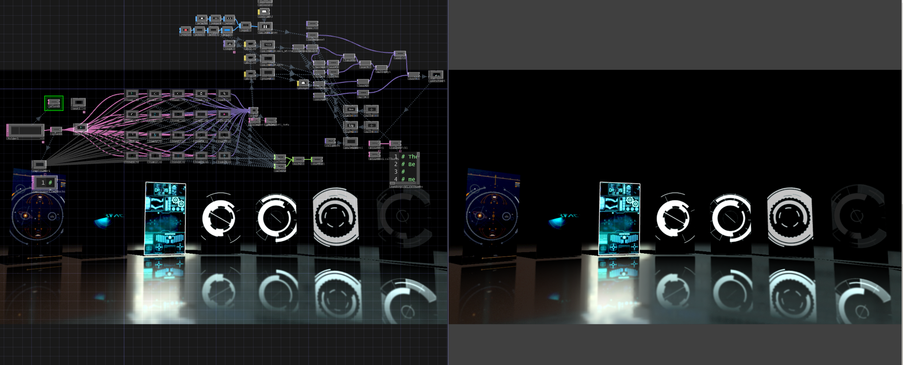
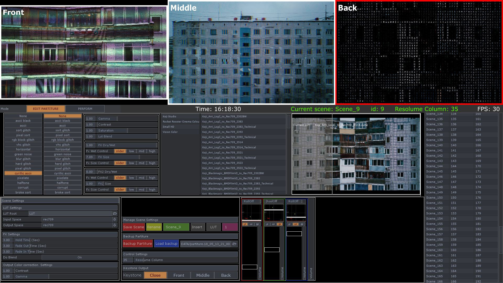

AI Agents.
Фантастические твари
и где они обитают
Станислав Глазов
Media Artist & Developer
Hou2Touch School
1998.
Как я из художника стал программистом
«Люди которые строят software — казались богами.»

Technical Director.
C++ плагины под Maya. Программирование Pipeline для VFX.
Управление производством.
building reusable non-destructive workflow.

PM / BPMN Integration.
Флакон.
BPMN. Автоматизация бизнес-процессов.
Завод Флакон, документооборот, интеграции.
Архитектурное мышление работает везде.

Из программиста —
обратно в художники.
Реалтайм. VJing. Музыка.
Но теперь — как системный архитектор.
Процедурализм — это инженерное мышление.

Строил инструменты.
Медиа-серверы для театра.
Автоматизация инфографики для Коммерсант ТВ.
Стриминг системы и интерактивные инсталляции.
Архитектура.

Школа.
2500+ студентов. Houdini. TouchDesigner.
От художника к менеджеру.

Пароход уходит.
Хочется заниматься будущим.»
Bottleneck — это я.
ENFP-T · Prudence 2/10 · ADHD
Фаундер без управленца.
AI как зеркало.
Миллион токенов контекста.
Паттерны в собственной коммуникации.
Vibecoding → AI SWE
Чатики → VSCode → Copilot Agent →
Claude Code → собственный harness.
Копипаст скриптов из чатиков. Memory Bank. C4. Claude Code.
Персональная
сингулярность.
POS — Push vs Pull.
Не нужны люди чтобы проверить идею.
Меньше тревожности. Больше уверенности.
1 человек. 0 команда. 1 месяц.
Карта доменов
graph LR
POS["Personal OS"] --> ART["Art"]
POS --> EDU["Education"]
POS --> DEV["Dev"]
POS --> PHOTO["Photo"]
POS --> LIFE["Life"]
ART --> AP["Projects, Open Calls, SMM"]
EDU --> H2T["Hou2Touch, Lessons, Content Mktg"]
DEV --> SD["SpecDesigner, NewsEngine, Crypto\nVision, Graphs, Evals"]
PHOTO --> PF["Portfolio, Open Calls"]
LIFE --> BC["Bureaucracy, Psychology, Health"]
style POS fill:#1a0a10,stroke:#e94560,color:#e94560,stroke-width:2px
style DEV fill:#0a0d1a,stroke:#4a9eff,color:#4a9eff
style EDU fill:#0a1a0d,stroke:#00ff88,color:#00ff88
9 доменов · 46+ проектов · domains.yaml как единый реестр
Экосистема инструментов
graph TB
subgraph SK ["Skills (22 skills)"]
S["gmail, calendar, notion\ntelegram, handoff, session"]
end
subgraph CLI ["CLI (hub + proxy)"]
C["h2t CLI"]
end
subgraph FW ["Frameworks"]
F1["h2t-ai"] & F2["h2t-vision"] & F3["h2t-graphs"] & F4["h2t-evals"] & F5["h2t-transcription"]
end
SK -->|"вызывают"| CLI
CLI -->|"роутит"| F1 & F2 & F3 & F4 & F5
style SK fill:#1a0a10,stroke:#e94560,color:#e94560
style CLI fill:#0e0e16,stroke:#ffb800,color:#ffb800
style FW fill:#0a1a0d,stroke:#00ff88,color:#c0c0d0
Skills → CLI → Frameworks. Каждый уровень не знает о других.
NewsEngine
AI-powered research intelligence pipeline
graph LR
subgraph SRC ["SOURCES"]
S1["YouTube"] & S2["RSS"] & S3["Telegram"] & S4["Substack"] & S5["Search APIs"]
end
subgraph BRZ ["BRONZE"]
P["Parsers"] --> F["Fetcher"] --> R["Raw Storage"]
end
subgraph SLV ["SILVER"]
I["Ingestion"] --> N["Normalize"] --> E["LLM Enrich"] --> D["Dedup + Embed"]
end
subgraph GLD ["GOLD"]
SC["Scoring\n4 scorers"] --> TH["Thompson\nSampling"]
end
subgraph OUT ["OUTPUT"]
UI["Dashboard"] & DG["Digest"] & RA["DeepResearch\nAgent"] & TP["Telegram\nPublisher"]
end
SRC --> BRZ --> SLV --> GLD --> OUT
OUT -->|"feedback"| TH
style SRC fill:#0e0e16,stroke:#3a3a50,color:#a0a0b8
style BRZ fill:#0a1a0d,stroke:#00ff88,color:#c0c0d0
style SLV fill:#0a0d1a,stroke:#4a9eff,color:#c0c0d0
style GLD fill:#1a0a10,stroke:#e94560,color:#e94560
style OUT fill:#0e0e16,stroke:#ffb800,color:#c0c0d0
Prefect (5 flows) · PostgreSQL + pgvector · OpenAI + Ollama · Medallion architecture
h2t-vision + h2t-snap
H2T-VISION
Semantic video analysis
SceneDetect → CLIP → VLM
Smart keyframes
10-100x inference reduction
262 tests · 8 endpoints
H2T-SNAP
Lightweight computer use
Capture → Click → Type → Hover
JSON output
Background capture
17 MB · zero deps · Windows + macOS
h2t-transcription
9-stage video processing pipeline. 582 videos, 265 hours.
graph LR
S["SCAN"] --> T["TRANSCRIBE"] --> C["CORRECT"]
C --> Q["QUALITY"]
S --> VA["VISUAL ANALYSIS\n(h2t-vision)\nCLIP + SceneDetect"]
Q --> CH["CHAPTER\nDETECTION"]
VA --> CH
CH --> E["ENRICHMENT\nсаммари, outcomes\nconcepts, techniques"]
E --> EM["EMBED"] --> D["DEDUP"] --> G["GRAPH\n20K nodes"]
G --> LMS["LMS\nPlatform"]
G --> BOT["AI\nChatbot"]
style S fill:#0a1a0d,stroke:#00ff88,color:#00ff88
style T fill:#0a1a0d,stroke:#00ff88,color:#00ff88
style C fill:#0a1a0d,stroke:#00ff88,color:#00ff88
style Q fill:#0a1a0d,stroke:#00ff88,color:#00ff88
style VA fill:#0a0d1a,stroke:#4a9eff,color:#4a9eff
style CH fill:#1a0a10,stroke:#e94560,color:#e94560,stroke-width:2px
style E fill:#0a1a0d,stroke:#00ff88,color:#00ff88
style EM fill:#0a1a0d,stroke:#00ff88,color:#00ff88
style D fill:#0a1a0d,stroke:#00ff88,color:#00ff88
style G fill:#1a0a10,stroke:#e94560,color:#e94560,stroke-width:2px
style LMS fill:#0e0e14,stroke:#ffb800,color:#ffb800
style BOT fill:#0e0e14,stroke:#00ff88,color:#00ff88
Текст + визуал сходятся в Chapter Detection → качественные саммари → Knowledge Graph
Воронка формализации
Один граф, один потребитель
graph TB
subgraph CT ["creative-thinking plugin"]
QE["query.py\n405 lines"] --> GD["context_graph.json\n901 nodes"]
SK["Skills"] --> QE
end
CC["Claude Code"] --> SK
style CT fill:#0a0a10,stroke:#e94560,color:#c0c0d0
style CC fill:#0a1a0d,stroke:#00ff88,color:#00ff88
Один граф. Один движок. Hardcoded внутри plugin.
Второй потребитель — паттерн ясен
graph TB
subgraph CT ["creative-thinking"]
Q1["query.py"] --> G1["901 nodes"]
end
subgraph AI ["h2t-ai"]
Q2["query.py copy"] --> G2["674 + 3685 nodes"]
end
subgraph TR ["h2t-transcription"]
Q3["query.py ???"]
end
Q1 -.-|"duplicated"| Q2
Q2 -.-|"copy again?"| Q3
Q3 --> ADR["ADR-001:\nвынести в shared package"]
style ADR fill:#1a0a10,stroke:#e94560,color:#e94560,stroke-width:2px
Одна логика, несколько потребителей — пора выносить.
Движок не знает домен
graph LR
subgraph ENGINE ["h2t-graphs (shared kernel)"]
Q["Query"]
W["Write"]
F["Feedback"]
V["Validation"]
end
ENGINE -->|"query + scoring"| CT["creative-thinking\nframework, concept"]
ENGINE -->|"query + scoring"| AI["h2t-ai\noperator, pattern"]
ENGINE -->|"query + scoring"| TR["h2t-transcription\nchapter, outcome"]
CT -->|"nodes + edges"| ENGINE
AI -->|"nodes + edges"| ENGINE
TR -->|"nodes + edges"| ENGINE
style ENGINE fill:#1a0a10,stroke:#e94560,color:#e94560
style CT fill:#0a1a0d,stroke:#00ff88,color:#00ff88
style AI fill:#0a1a0d,stroke:#00ff88,color:#00ff88
style TR fill:#0a1a0d,stroke:#00ff88,color:#00ff88
Engine — фреймворк. Ontology — данные. Они не смешиваются.
Паттерн повторяется
graph LR
A["Компонент\nвнутри одного repo"] -->|"2-й потребитель"| C["Сразу extract:\nshared kernel"]
C -->|"CLI + API"| D["Service"]
style A fill:#0e0e16,stroke:#3a3a50,color:#a0a0b8
style C fill:#1a0a10,stroke:#e94560,color:#e94560
style D fill:#0a1a0d,stroke:#00ff88,color:#00ff88
| h2t-graphs | h2t-evals | |
|---|---|---|
| Компонент | query.py в CT | eval_baseline.py в graphs |
| Потребители | h2t-ai, transcription | vision, transcription, ai |
| Extract | ADR-001 → repo | → h2t-evals repo |
Второй потребитель = сразу shared kernel.
Скрипт vs LLM
СКРИПТ (детерм.)
- Сбор данных из API
- Парсинг, трансформация
- Валидация
- State management
- Scheduling, routing
LLM (стохаст.)
- Классификация
- Суммаризация
- Генерация
- Reasoning
- Creative tasks
POS as Medallion Architecture
graph LR
B["BRONZE\nRaw dump\nAPI response\nGit data"] --> RL["RAW LAKE\nAppend-only\nВоспроизводимый"]
RL --> S["SILVER\nКлассификация\nТегирование\nСуммаризация"]
S --> DB["DB / VAULT\nObsidian\nSQLite\nContext graph"]
DB --> G["GOLD\nNotion tasks\nDashboard\nDaily digest"]
style B fill:#0a1a0d,stroke:#00ff88,color:#00ff88
style S fill:#1a0a10,stroke:#e94560,color:#e94560
style G fill:#0e0e16,stroke:#ffb800,color:#ffb800,stroke-width:2px
Bronze = детерм. · Silver = стохаст. · Gold = готов к действию
Personal OS = ETL
graph LR
subgraph E ["EXTRACT (скрипт)"]
E1["Gmail API"] & E2["Calendar"] & E3["Telegram"] & E4["GitHub"] & E5["MeetGeek"]
end
subgraph T ["TRANSFORM (LLM)"]
T1["Суммаризация\nКлассификация\nПриоритизация"]
end
subgraph L ["LOAD (скрипт)"]
L1["Notion tasks"] & L2["Vault"] & L3["Daily brief"] & L4["Dashboard"]
end
E --> T --> L
style E fill:#0a1a0d,stroke:#00ff88,color:#c0c0d0
style T fill:#1a0a10,stroke:#e94560,color:#c0c0d0
style L fill:#0a0d1a,stroke:#4a9eff,color:#c0c0d0
Оркестратор: cron · hook · агент · человек
Skill + CLI = один инструмент
graph LR
CLI["notion_cli.py\nquery, create, update, get"] --> P["ETL PIPELINE\nскрипт, cron"]
CLI --> A["SKILL (агент)\nиз чата"]
style CLI fill:#1a0a10,stroke:#e94560,color:#e94560,stroke-width:2px
style P fill:#0a1a0d,stroke:#00ff88,color:#00ff88
style A fill:#0a0d1a,stroke:#4a9eff,color:#4a9eff
CLI = единый интерфейс для скрипта И для агента
Два режима загрузки
BACKFILL (один раз)
Gmail: за 30 дней
Telegram: за 3 месяца
Calendar: все события
Notion: все задачи
REAL-TIME (по расписанию)
Gmail: новые за час
Telegram: новые
Calendar: изменения
Notion: обновлённые
Medallion принимает оба потока одинаково
«Спроси у своего агента»
Работает, если знаешь:
- Что такое venv и зачем
- Чем CLI отличается от API
- Зачем нужен git
- Что такое hook
- Где граница скрипт / LLM
- json, yaml, toml, jq
Динамический контекст
domains.yaml (онтология) ├── art: 6 проектов ├── dev: 8 проектов ├── education: 4 проекта ├── crypto: 3 проекта └── всего 9 доменов, 46+ проектов git remote → repo-mapping → domain → контекст Claude динамически определяет домен из директории, в которой запущен
CLI-first
| CLI | MCP | |
|---|---|---|
| Токены | ~0 (1 tool) | 50K+ (100 tools) |
| Тестирование | terminal | нужен MCP client |
| Framework | нет lock-in | привязан |
| Auto-fix | в wrapper | невозможно |
| Determinism | стабильно | непредсказуемо |
uvx: один CLI, все репозитории
graph LR
subgraph REPOS ["Репозитории (каждый со .venv)"]
R1["h2t-graphs"] & R2["h2t-vision"] & R3["h2t-transcription"]
end
UVX["uv tool install -e .\n→ глобальный PATH"]
subgraph GLOBAL ["Доступно отовсюду"]
H["$ h2t graphs query ...\n$ h2t vision analyze ...\n$ h2t transcribe status ..."]
end
REPOS --> UVX --> GLOBAL
AG["Агент из ЛЮБОГО проекта"] --> GLOBAL
style UVX fill:#1a0a10,stroke:#e94560,color:#e94560,stroke-width:2px
style AG fill:#0a1a0d,stroke:#00ff88,color:#00ff88
БЕЗ UVX
$ cd ~/h2t-graphs
$ source .venv/bin/activate
$ python scripts/query.py \
--type framework
$ deactivate
$ cd ~/h2t-vision
$ source .venv/bin/activate
$ python scripts/analyze.py ...
Агент забывает source .venv
в 80% случаев
С UVX
$ h2t graphs query --type framework
Одна команда.
Из любой директории.
venv активируется автоматически.
Инфраструктура vs Онтология
graph LR
subgraph INFRA ["ИНФРАСТРУКТУРА"]
I1["h2t-graphs\nh2t-evals"]
end
INFRA -->|"не знает домен"| D1["h2t-transcription\nchapters, topics"]
INFRA --> D2["creative-thinking\ntechniques, lessons"]
INFRA --> D3["TD skill\nnodes, params"]
style INFRA fill:#1a0a10,stroke:#e94560,color:#c0c0d0
style DOMAIN fill:#0a1a0d,stroke:#00ff88,color:#c0c0d0
PostgreSQL не знает про твой бизнес. Твой бизнес не знает про WAL.
SpecDesigner — Miro для AI-агентов

Визуальный редактор архитектуры —
single source of truth
для кодинга агентов.
Рисуешь граф сервисов, очередей, акторов →
агент читает спецификацию →
генерирует код по графу.
От текста к действию
graph LR
BASE["BASE MODEL\nпредсказывает\nследующий токен"] -->|"+ RLHF"| INST["INSTRUCT MODEL\nследует\nинструкциям"]
INST -->|"+ tools\n+ memory\n+ loop"| AGENT["AGENT\nдумает → действует\n→ проверяет"]
style BASE fill:#0e0e16,stroke:#3a3a50,color:#a0a0b8
style INST fill:#0a0d1a,stroke:#4a9eff,color:#4a9eff
style AGENT fill:#1a0a10,stroke:#e94560,color:#e94560,stroke-width:2px
LLM в упряжке
graph TB
subgraph MEM ["MEMORY"]
M1["sessions"] & M2["vault"] & M3["context graph"]
end
subgraph CTX ["CONTEXT WINDOW"]
direction TB
SP["system prompt"] & CMD["CLAUDE.md\nrules"] & SK["skills\nMCP"] & USR["user messages"]
LLM["⬡ LLM"]
end
subgraph TOOLS ["TOOLS"]
T1["bash"] & T2["disk"] & T3["web"] & T4["APIs"]
end
MEM --> CTX
CTX --> TOOLS
TOOLS -->|"result"| CTX
style MEM fill:#0a0d1a,stroke:#4a9eff,color:#c0c0d0
style CTX fill:#1a0a10,stroke:#e94560,color:#c0c0d0
style TOOLS fill:#0a1a0d,stroke:#00ff88,color:#c0c0d0
style LLM fill:#1a0a10,stroke:#e94560,color:#e94560,stroke-width:2px
Агент = модель + контекст + инструменты + цикл think → act → observe
Managed Pipeline
graph LR
IN["INPUT"] --> S1["СКРИПТ\nextract"]
S1 --> L1["LLM\nenrich"]
L1 --> S2["СКРИПТ\nvalidate"]
S2 --> S3["СКРИПТ\nload"]
S3 --> OUT["RESULT"]
style IN fill:#0e0e16,stroke:#3a3a50,color:#a0a0b8
style S1 fill:#0a1a0d,stroke:#00ff88,color:#00ff88
style L1 fill:#1a0a10,stroke:#e94560,color:#e94560,stroke-width:2px
style S2 fill:#0a1a0d,stroke:#00ff88,color:#00ff88
style S3 fill:#0a1a0d,stroke:#00ff88,color:#00ff88
style OUT fill:#0e0e16,stroke:#ffb800,color:#ffb800,stroke-width:2px
Плюсы
Предсказуемо
Один проход
Каждый шаг тестируем
Дешёвые токены
Минусы
Не улучшается со временем
Качество = качество промпта
Хрупкий к новым данным
Self-Improving System
graph LR
GEN["GENERATE\nкандидат"] --> EXEC["EXECUTE\nна тест-сете"]
EXEC --> EVAL["EVALUATE\nscore + WHY"]
GT["GROUND\nTRUTH"] --> EVAL
EVAL -->|"fail"| REF["REFLECT\nпочему провал?"]
REF --> IMP["IMPROVE\nprompt / strategy"]
IMP --> GEN
EVAL -->|"pass"| DONE["✓ DONE"]
style GEN fill:#0a0d1a,stroke:#4a9eff,color:#4a9eff
style EXEC fill:#0e0e16,stroke:#3a3a50,color:#a0a0b8
style EVAL fill:#1a0a10,stroke:#e94560,color:#e94560,stroke-width:2px
style GT fill:#0e0e16,stroke:#ffb800,color:#ffb800,stroke-width:2px
style REF fill:#0a0d1a,stroke:#4a9eff,color:#4a9eff
style IMP fill:#0a1a0d,stroke:#00ff88,color:#00ff88
style DONE fill:#0a1a0d,stroke:#00ff88,color:#00ff88,stroke-width:2px
Ключ: EVALUATE знает не только что неправильно, но почему.
REFLECT анализирует причину, IMPROVE меняет стратегию, не просто retry.
Нужен ground truth set. С каждым циклом — точнее.
Три режима агента
Автоматизируй где ошибка безопасна.
Контроль — где ошибка дорога.
HUMAN-IN-THE-LOOP
Email, коммиты, git push
→ только с подтверждения
HUMAN-ON-THE-LOOP
Daily Brief: 4 API каждое утро
→ ты только читаешь результат
FULLY AUTONOMOUS
Telegram digest, транскрипты
→ worst case = плохой summary
Воронка формализации
Руками → инструкция агенту →
скрипт → CLI → node в сети
Не дробить заранее.
Позволить структуре вырасти из работы.
1. Claude Code — поставить
2. CLAUDE.md — написать
3. Одна рутина — автоматизировать
4. 30 минут — первый результат
Пример: лень считать маршруты → gather.py → Daily Brief → gather переиспользуется в session-start, handoff, pre-merge-check
Три слоя защиты
Detection → Masking → Data Minimization
Гибрид:
Ollama (сенситивное, локально)
Claude (reasoning, облако)
Отдельный токен с минимальными правами.
Стажёру — доступ в офис, но не ключ от сейфа.
DETECTION
Microsoft Presidio (open-source)
имена, email, телефоны, карты
MASKING
alice@gmail.com → [EMAIL_1]
карта токенов хранится локально
DATA MINIMIZATION
Gmail: последнее сообщение
Calendar: тип + длительность
Telegram: последние 20 сообщений
Где теряются токены
Без оптимизации $2-3K/мес
С оптимизацией $500-1K/мес
| Проблема | Решение | Экономия |
|---|---|---|
| 100 MCP tools = 50K токенов | CLI | 96-99% |
| Каждый запрос с нуля | Prompt caching | 68-90% |
| Opus для простых задач | Model routing | 70% |
Гардрейлы
War story: AI-агент удалил 100% файлов с Google Drive. Причина: унаследовал полные OAuth credentials.
1. Отдельный токен
2. Approval gates
3. Audit trail
4. Sandboxing
5. Kill switch
OPEN-SOURCE
NeMo Guardrails (NVIDIA) — middleware, Colang DSL
Guardrails AI — валидация выходов LLM
LlamaGuard 3 (Meta) — safe/unsafe classifier
LLM Guard (Protect AI) — PII, injection, toxicity
CLOUD
AWS Bedrock Guardrails
Azure AI Content Safety
Google Vertex AI Safety
COMPLIANCE
OWASP LLM Top 10 (2025)
NIST AI RMF
EU AI Act (дедлайн: авг 2026)
ISO/IEC 42001
Три паттерна оркестрации
SEQUENTIAL
graph LR
A["Extract"] --> B["Enrich"] --> C["Load"]
style A fill:#0a1a0d,stroke:#00ff88,color:#00ff88
style B fill:#1a0a10,stroke:#e94560,color:#e94560
style C fill:#0a1a0d,stroke:#00ff88,color:#00ff88
Daily Brief
Bronze → Silver → Gold
✓ просто
✓ предсказуемо
PARALLEL
graph TB
IN["Task"] --> A["Agent 1"] & B["Agent 2"] & C["Agent 3"]
A & B & C --> SYN["Synthesize"]
style IN fill:#0e0e16,stroke:#3a3a50,color:#a0a0b8
style SYN fill:#0e0e16,stroke:#ffb800,color:#ffb800,stroke-width:2px
CEO Council
4-6 советников → синтез
✓ diversity
✓ быстрее
HIERARCHICAL
graph TB
M["Manager"] --> W1["Worker 1"] & W2["Worker 2"] & W3["Worker 3"]
W1 & W2 & W3 --> M
style M fill:#1a0a10,stroke:#e94560,color:#e94560,stroke-width:2px
Manager → sub-agents
Для 50+ агентов
✓ масштаб
✗ сложно, дорого
5 вещей на завтра
1 ВОРОНКА — промпт → скилл → скрипт → CLI → node в сети
2 ЗОНЫ — скрипт собирает, LLM обогащает. Medallion.
3 CLI-FIRST — subprocess предсказуемее MCP
4 ETL — Personal OS = Extract → Transform → Load
5 CONTEXT GRAPH — schema-first, движок не знает домен
Станислав Глазов
Media Artist & Developer
Hou2Touch School · SpecDesigner
Открыт к консультациям по построению
агентных пайплайнов и AI-native процессов
@prcdrl — Telegram